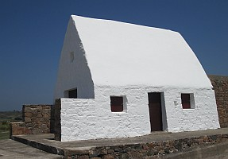

Fort Lauderdale,
Florida,
USA
Lé 24 dé dézembre, 1977
Moussieu l'Rédacteu,
Nouos v'la arrivés à la Sèrvelle dé Noué, mais pour mé ch'est bein un jour comme un autre. Né v'là tch'est qu'la vieillèche amène. Sans doute, y'a les mémouaithes du temps jadis et si j'pouvais r'tchuler l's années et r'pendre ma cauche au capé d'l'âtre et dithe à Papa et Manman qué j'aimethais bein vaie Papa Noué apporter les présents tch'i' s'en va mett' dédans, ché s'sait mangnifique dé pouver r'vivre chutte mèrveil'ye tch'est l'innocence dé ses p'tits jours. Si un rêve dé même pouvait s'arriver, Papa m'dîthait, comme i' l'faisait dans chu temps-là, tch'i' fallait aller s'couochi car Papa Noué n'veindrait pon s'i' criyait que j'tais rêvil'yi. Ch'est en tchi j'allais m'couochi mais j'êprouvais à n'pon m'endormi pour pouver l'ouï d'valer par la chenm'née, mais, s'en m'en appèrchéver, j'm'endormais quand même, et v'la tchi n'm'empêchait pon d'apprécier l'orange et les codrettes et les nouaix, et p't-êt' tchique pétit bibi qué j'trouvais dans la cauche lé matîn du Jour dé Noué.
Tchiquefais j'allions pâsser Noué siez Parain et Marraine d'Aubert (née Anne Le Feuvre) à La Mouaie, à St. Brélade. Nou y'allait à pid l'arlévée d'la Sèrvelle par Le Mont Hueûlîn, Le C'mîn d'La Brétchette et La Grand' route des Mielles. J'm'èrsouveins qué quand nou-s-arrivait à maintchi c'mîn d'chutte Grand' Route j'mé trouvais lâssé et Papa m'disait: "Eh bein, j'allons faithe la montinne - monte à bord!" Et i' m'portait sus san dos pour eune volée. Ayant 'té naviguant, i' faîsait sèrvi l'expression d'monter à bord pour monter sus san dos comme si ch'tait monter à bord dé san navithe.
Quand j'y pense, i' dait y'aver beintôt huiptante ans qué j'n'ai pon ouï pèrsonne dithe "Faithe montinne!" ("Pick-a-back" en Angliais). Ch'est probabliément eune expression oubliée par la grand' mâjorité des gens d'nouos jours.
I' m'sembliait qu'la route 'tait tèrribliement longue. sans doutes j'faîsais deux pas contre iun d'Papa et d'Manman. J'tais lâssé en arrivant à La Mouaie, mais heûtheux comme Pînchon car j'tais seux d'aver des présents. ma Marraine m'aimait hardi et j'tais seux d'êt' gâté.
Papa et Manman - des saints su la tèrre! I' n'lus pliaingnaient pon d'aver à marchi des Landes dé St. Ou à La Mouaie. Papa éthait peut trouver san c'mIn à La Pulente par La Grand' Route des Mielles à tâtons, car il avait marchi là des Landes jour auprès jour pour lontemps quand i' travaillait à la p'tite forge dans la cârriéthe dé La Pulente à tremper l's ôtis des machons tchi bâtîdrent lé neu mont d'chu nom-là. I' fallait sé l'ver à chîntch'heuthes au matîn pour êt' là à sept heuthes. I' travaillait jusqu'à siex heuthes et avait à r'marchi ès Landes et il 'tait huit heuthes quand i' mangeait lé r'pas du sé. Il attendait fête au sanm'di car i' tchittait l'travas à chîntch'heuthes l'arlévée à la pliaiche dé six!

En c'mîn , i' m'disait d'faithe la minne qué ch'tait un tas dé p'tites routes à la pliaiche d'eune seule longue. Es Laveurs i' m'disait: "J'allons aller à la Tour Cârrée." Arrivés là i' m'disait: "A ch't heu, j'allons aller jusqu'à La Cauminne à Mêré Best." Dé là, i' m'disait: "D'ichîn j'allons aller jusqu'à la maîson à Mess Quénault." Arrivés là, ch'tait: "Bon! Nouos v'la quâsi à but d'nouot' quémîn. D'ichîn j'allons aller jusqu'à la cârriéthe dé La Pulente." Finnalement j'tions quâsi à La Mouaie.
Dans des temps nou-s-avait la chance dé vaie la cârrosse tch'allait sans j'vaux (lé "train" du Jersey Railways and Tramways Ltd.), tchi pâssait par La Mouaie en c'mîn pour La Corbiéthe. La preunmié fais qué j'l'avais veue 'tait à Bieaumont à St. Pièrre, et j'avais quâsi ieu peux d'l'engîn tchi soûffliait eune colonne dé feunmée en l'air dé sa cheunm'née châque fais tch'i' faîsait "Pouffe! Pouffe!"
Papa m'ttait ses habits du Dînmanche quand j'allions à La Mouaie. Ch'tait un fa tch'avait d'l'âge et tchi c'menchait à s'faner et aver un teint manniéthement vèrdaud. Toutes les fais tch'i' lé m'ttait Manman lî disait tch'il 'en acatîsse un neu, et i' lî disait tch'i' pouvait faithe acouo pour ch't hivé, et tch'il en acat'tait un neu pour l'êté tchi veint si la saîson d'patates est bouanne et qu'les fèrmiers piêssent payi lus comptes pour la forge.
Quand j'vai l'abondance dé tout ichîn dans l'Nouvieau Monde, j'pense à ches vièrs jours en Jèrri quand nou n'avait qu'deux fas d'habits, iun pour touos les jours et l'aut' pour lé Dînmanche. Mais j'avions eune abondance dé bonheu et d'bouans souhaits. Ch'là n'a pon changi, et j'vouos souhaite à tous eune raide Bouanne Année.
George d'La Forge
Viyiz étout: